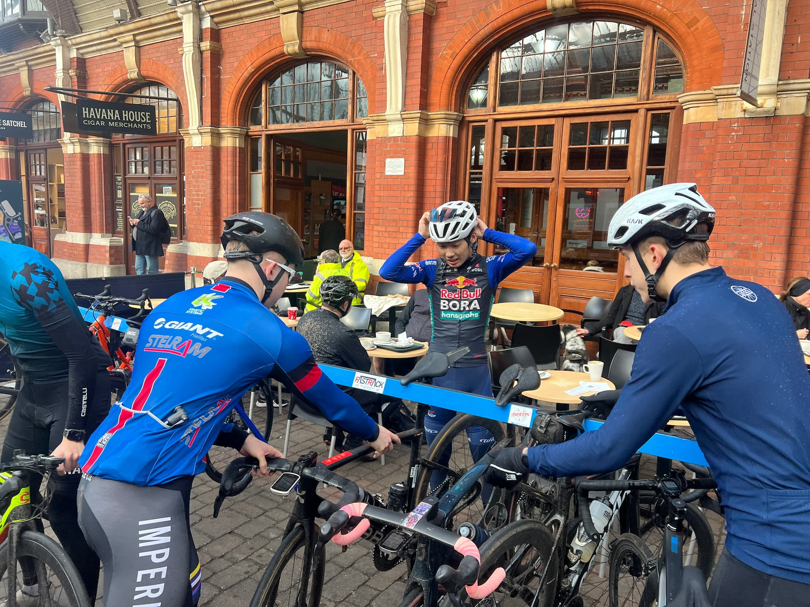
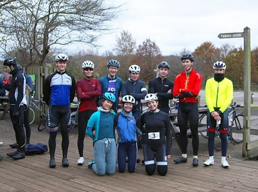

Racing, exploring, commuting or just rolling — ICCC welcomes all riders, all levels, all year round.
ICCC is a student-led cycling club at Imperial College London, affiliated with Imperial College Union. We ride road, trails, and everything in between — weekly group rides, weekend MTB trips, BUCS races, and social events throughout the year.
We're more than a racing club. We welcome commuters, bike packers, indoor cyclists, and anyone for whom cycling is part of life. If you have two wheels and a willingness to show up, you belong here.
The club is run entirely by students, which means it's shaped by whoever joins. If you want to organise a ride, plan a trip, or just find people to ride with in London — this is the place.

ICCC members, 2024
Weekly rides for all levels — Wednesday beginner laps at Richmond Park, and longer Sunday rides into Surrey, Windsor, and Kent.
Regular trail rides at local spots and weekend trips to trail centres. No experience needed — just a bike and an appetite for adventure.
We compete in BUCS and local events throughout the year. The club helps with transport and subsidised entry fees for members who want to race.
Stay connected between rides. Share your routes, track your progress, and see what other members are doing throughout the week.
Discounted road kit, MTB jerseys, and club hoodies — available to members each season. Keep an eye on the news for kit drop announcements.
An annual summer trip abroad, social rides, and club events. The best parts of being in a club happen off the bike too.
Membership is open to everyone at Imperial. Sign up through the Imperial College Union to get access to all rides, events, and the club group chat. Free to join — just show up.
ICCC has been part of Imperial for years, and many of our alumni have gone on to keep cycling long after graduation — whether that's racing, bikepacking, or weekend rides with friends.
We don't have a formal alumni programme, but we'd love to stay in touch. Whether you want to share what you're up to, offer advice to current members, or just say hello — our inbox is always open.
Get in touch →Follow us on Instagram for club updates, ride highlights, and the occasional throwback.
ICCC is entirely student-run and member-funded. If you'd like to support us — whether as an individual donor or a company interested in sponsorship — we'd love to hear from you. Sponsors gain visibility through our kit, website, and events, while supporting an active student community at Imperial.